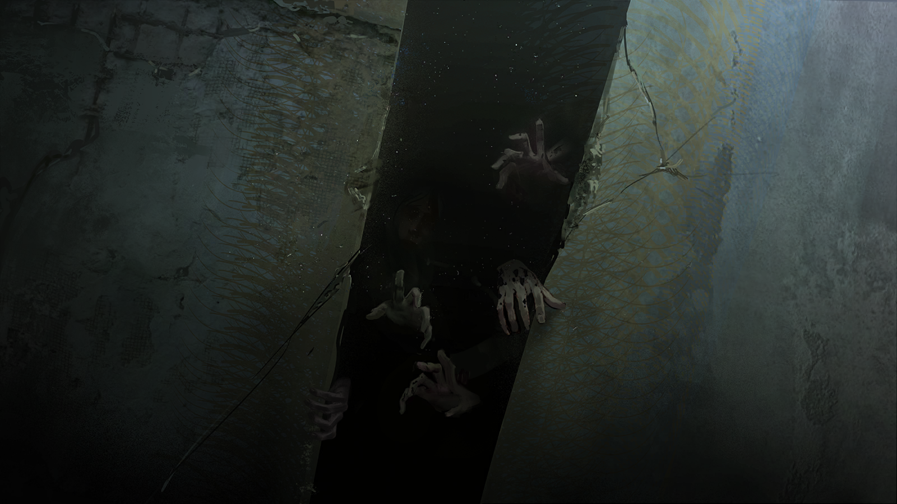
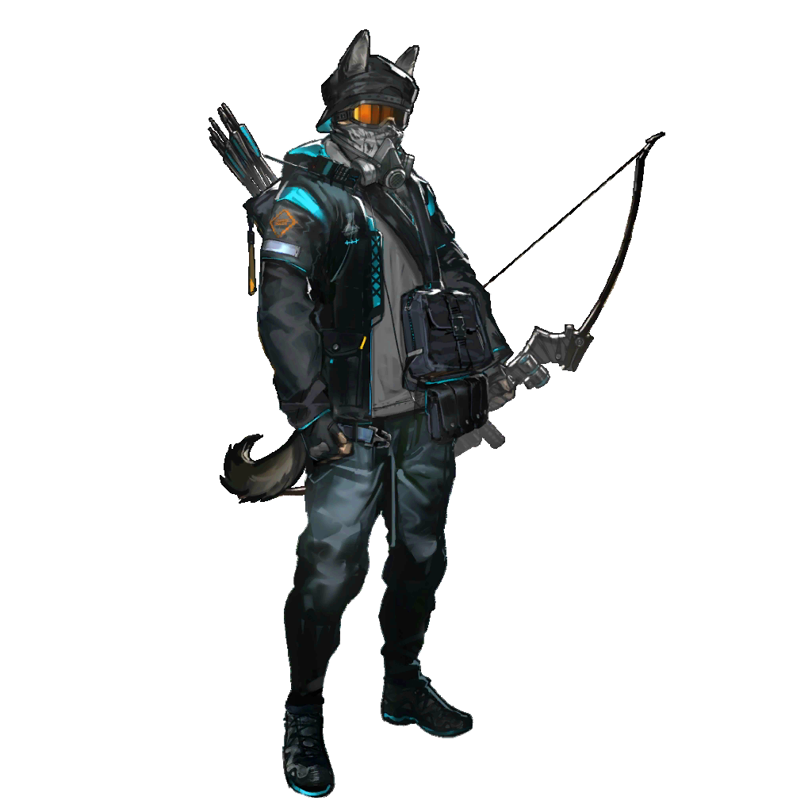
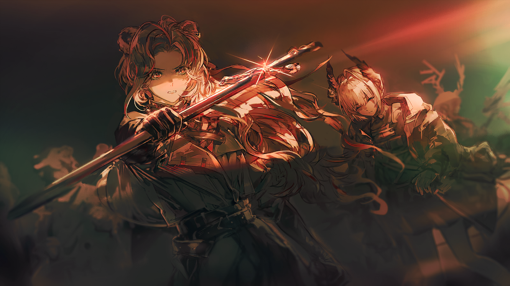
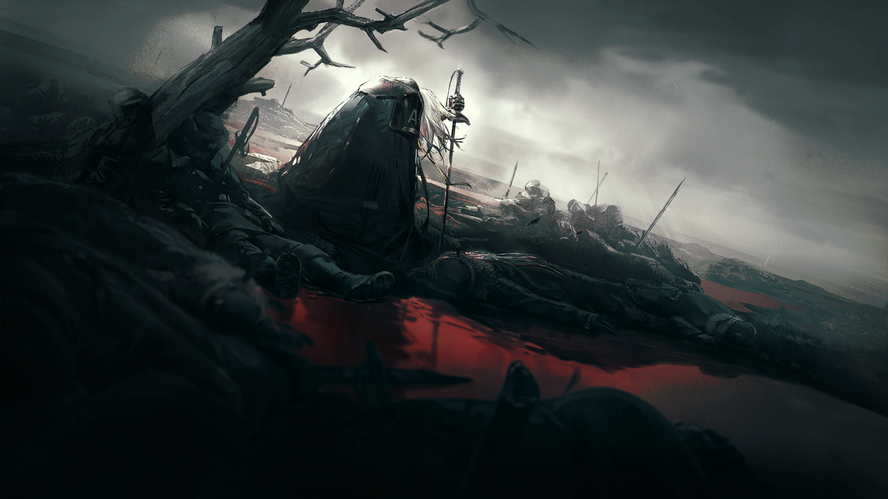

小心的工人
嘘——小声点，没看到门那边都是人吗？

苦恼的工人
可，可是，今天不是上班的日子吗？为什么大家都不去工作？我还等着拿钱还债呢。

小心的工人
我们只是想来上班，他们要干什么——
不远处，工人们排成几排，举着旗帜和标语牌，把整条街堵得严严实实。
那些牌子上的红字大多简单直率，“提高待遇”“严惩恶警”“拒绝战争”……当然，还有“叶莉萨维塔去死！”。

观察的工人
有几辆货车过来了。

直率的工人
带上家伙，拦住问问是哪路的。
众人高喊了一声，他们蜂拥在车辆的周围，喊着让司机摇下车窗。

货运司机
瞎了眼了？没看到货厢上的图标吗？我们收的货是要直接供给琥珀宫的！
货运司机
耽误一分钟，你们通通得进监狱！

“雷尔金”
看到前面的标语了吗，朋友？
“雷尔金”
在罢工期间，任何人都不许越过纠察线半步，对强行违反规矩闯入的，我们绝不会手下留情。

“雷尔金”
要不要试试，看看你那点无知和傲慢值不值一条命？
货运司机
……我们这就走。
“雷尔金”
慢着。
“雷尔金”
回去告诉你老板，从今往后，你们公司被圣骏堡所有工会写进黑名单了。

“雷尔金”
只要看见你这个所谓的标志，我们见一次砸一次，拦一次骂一次。
“雷尔金”
直到你们加入货运工人工会，并支持我们的罢工。
起哄的工人
听懂了吗？听懂了就滚！
一阵吵闹的欢呼声中，货车掉头驶去。
“雷尔金”
朋友们，都看清楚了吗？
“雷尔金”
那些资本家、大贵族，他们还没有死心。直到今天，他们还想拿法律和合同给我们拴上缰绳！
“雷尔金”
他们还举起屠刀，砍向那些敢为我们说话的年轻人！
众人
他说的是谢尔戈，被那些*乌萨斯粗口*特务杀了！
“雷尔金”
是的，记住这个名字。谢尔戈为我们讲了几句实话，发了几篇报纸，就被那些魔鬼当众谋杀，他到底犯了什么罪？
“雷尔金”
除非条子们想告诉工人——在这个国家，抗议无休止的加班是犯罪！要求能养活家人的工资是犯罪！不愿意当战争机器的燃料，也是犯罪！
“雷尔金”
去他的*乌萨斯粗口*女大公，去他的*乌萨斯粗口*皇女！谁想开动战争机器，就让她自己滚过来干活！
众人
去他的！我们不干了！
人群中的声音
有雷尔金带着我们，工人必将胜利！
“雷尔金”
……
“雷尔金”
……安托沙那边有消息吗，卡莱夫？

兴奋的工人
没有，不过放心吧，我安排了几个靠谱工友在远处观察，不会错过什么的。

“雷尔金”
……
他望向北边，不置可否地摇摇头。
愤怒的工人
该死……二楼有两架军用重弩，我们拿不下来！

紧张的工人
重装防御小组，把盾牌都推上去！
？？？
别急，都退下来，那种厚度的铁板挡不住军用重弩的射击。

紧张的工人
安托沙？

安托沙
把燃烧瓶和炸药都往墙下砸，吸引他们的注意。二组的人都带着爆破筒跟上我，从侧翼摸过去，明白了吗？

紧张的工人
……明白！
连环的剧烈爆炸声响起，惨烈的火光与滚滚浓烟瞬间吞噬了墙面，重弩射击声陡然凌乱。
突击的工人们压低身形，跑向侧翼。钢箭擦着他们的头顶飞过，在泥水里激起成片的泥浆。
几名胆大的工人，随着安托沙扑向大门死角，动作利落地将爆破筒死死卡进精钢大门的边角，猛地拉下拉火绳。

安托沙
散开！爆破——
整座厂房剧烈颤抖，沉重的防御铁门在火光中轰然倒塌，操作重弩的士兵满脸惊愕——
那些吃不饱饭的人们，高举着武器，朝着自己冲来……

伯塔尼
……队伍已经成功占领第五仓库南部厂区，其余人员正在稳步向精炼工厂方向推进，我会照看好他们。
伯塔尼
Raidian女士，您还有没有什么要转达——
伯塔尼
啊，好的。那么，就是这样。
坚雷
我们也已经顺利抵达预定位置。
伯塔尼
太好了。接下来保持联络，还有，请转告索尼娅她们，注意安全……希望你们的行动也能顺利。
伯塔尼
伯塔尼结束。
坚雷
测试结束。看来通讯暂时不会受到地下环境的影响，弑君者说的还真没错。
坚雷
卡托加区和铁河区之间已经建立稳定的私人通讯，他们的行动很顺利，与预估情况一致。我们继续按照预定路线，尽快离开圣骏堡即可。

坚雷
接下来的路段会变长，情况也更复杂，需要随机应变。
坚雷
虽然铁河区的行动能一定程度上为我们转移注意，但为防止意外，我们还是谨慎为好。
坚雷
在弑君者的协调下，我们找到了四辆有水道清洁公司标识的载具，和足够用到出城的燃料。

坚雷
最后再清点一下人数吧，等前面确认安全，大门打开，我们就换车。

凛冬
再往前就出城了。别乔克他们必须要撤离，我明白，但自治团也一定得走吗？

坚雷
应走尽走，否则Raidian他们不会冒险带队回到乌萨斯。这几乎是唯一的机会，无论是不是感染者，罗德岛都不会放弃任何一个人。

凛冬
可我们在城里更有用。我们有经验，有据点，而且学联那些学生都还——

真理
为什么又说这样的话？这是我们共同的决定，索尼娅，帮助转移矿工和向我们寻求庇护的感染者。这是一次正式任务。

真理
至于学联，我和谢尔戈他们交接的时候，你也在场。当时罗莎琳也在那里，她肯定也听到了。

烈夏
啊。我是在那儿，可我没说话呀……

凛冬
看吧，罗莎琳也不想走。我只是觉得，这个护送任务有将军和坚雷教官在，就已经能完成了，不是吗？

烈夏
不是，索尼娅，你听我说完！我是想说，其实我们没得选。咱们几个都被通缉了，就算留下来也很难在明面上继续行动。

凛冬
罗莎琳……！
烈夏
大小姐倒是有身份，可看现在那些贵族个个被吓得像越不了冬的小羽兽似的，她的身份估计也不管用了。

烈夏
说起来，他们去前面探路到现在，还没回来吗？

早露
我们之前第一次来探路时，这里应该是有人巡逻的……怎么现在，一个人也没有了？

早露
卓娅，地图在你手边吗？

苦艾
我在看。离开生活层之后，地下的板块构造相差不大，走错了也有可能，只希望现在掉头还来得及——

古米
不，早露姐，我们没走错。
古米
先前来的那回，我在水泥柱上做了记号区分的，所以是这边，没错。

古米
这里没有警察和卫兵，说不定……只是因为他们都被调到Raidian姐姐那边去了。
古米
……他们那边……
赫拉格
……等等。
赫拉格
前面的门已经被水泥封死了。

早露
欸……？
凛冬
这……

凛冬
不行，如果不能用砸的话，这门就没法弄开。

坚雷
那样动静太大了。

坚雷
下面水泥加固的痕迹还很新，显然是最近才封起来的。如果是因为我们的行动已经被发现，那现在闹出动静来，就正中警察的下怀。
坚雷
我们选这条路本来就只是因为它巡逻人数最少，大门附近虽然有人看守，但因为还有物资流动，有离开的机会。

坚雷
但现在大门却被封死了……这更印证了我们收到的消息，必须尽快撤离了。
凛冬
那我们直接换路。备用路线离这里有多远？
坚雷
等我联系弑君者，还有伯塔尼，先确定还有多少时间——

赫拉格
不，让我来吧。
坚雷
将军？
赫拉格
我们没有多少时间了。
赫拉格
第五仓库行动，最后极有可能演变成有首都卫戍军团下场的情况。我和塞拉菲娜女士讨论过，都认同这个推断，并且做好了对策。
赫拉格
而在真正的军队面前，他们坚持不了太久。所以我们没有试错的时间了，就当只有这一条路可走吧。

赫拉格
让我来打开这扇门。所有人，退后。
等到人们都后退之后，赫拉格往前走去，伸手让指腹贴上冰冷粗糙的水泥。
他没有立刻动手，而是先用指节逐个敲过上面几处位置，确认墙面存在少量的空腔，然后——
下一瞬，仿制的长刀无声出鞘。刀锋还是保持着并未开刃的模样，却精准地刺入了门上的薄弱处。
接着，他顿了一下，只在那处继续用力压实，细密的裂纹就自刀尖插入的位置，沿墙面飞快蔓延开了。
碎屑簌簌落下，而后是成块的水泥。他重复着类似的动作，直到上面的水泥几近完全剥落，整扇门也都微不可察地向内一沉——

喑哑的、人的呼喊，从门后传来。
赫拉格
——！
？？？
……谁——
？？？
救救……我们……
凛冬和烈夏几乎同时上前扶住了向后倾倒的另一扇门——或者说另一大块被割开的水泥，将它轻轻抬起，放在地上。
而大门的里面……里面是无数双向她们伸来的，孱弱而脏污的手。
凛冬
这里为什么……有这么多被关起来的人？！
烈夏
……还有源石粉尘。索尼娅，先别往前去了！
真理
古米，后退。
早露
天哪……
苦艾接住下意识往后退去的早露，拍了拍她的上臂，将她扶稳。
苦艾
我去……看看。我身上带了防护用具。
坚雷
我也来吧。凛冬，你们暂时不要进来，等我命令。

凛冬
他们出现在这里……难道是被扔在这里等死吗？！

赫拉格
……他们的穿着，看上去像是城里的工人。
赫拉格
连日以来铁河区源石精炼厂失踪的那些工人的去向，现在似乎明晰了。

凛冬
总是这样的事——为什么乌萨斯总是发生这样的事？
赫拉格
这不是我能解答的问题，而且，追问它并非当下最要紧的事项。

苦艾
啊，将军。您——
赫拉格
这些人，有可能是精炼厂里失踪的那些工人。

苦艾
……那也许他们是因为感染了矿石病才被带到这里的。
赫拉格
情况怎么样？

苦艾
还活着的有十七个人，但都已经没什么力气了。失温，加上饥饿，年纪大些，或者感染程度较重的……都已经死了。
苦艾
我记得有两辆载具上是不是还有几个空位？

坚雷
不够。如果都要带上，不够。而且他们中有些人必须要先做伤口的应急处理，这里发生过感染者遗体的崩解，又被封死了出路——
坚雷
该死，路！如果他们就是城里那些失踪的精炼厂工人，那被扔在这里，意味着出城的道路很可能也已经被封上了。
赫拉格
也许并没有完全封死。我过去看看。
坚雷
拜托你了，赫拉格先生。
坚雷
我们先赶紧做应急处理吧。苦艾，让烈夏和古米先戴上防护用具，当心感染。凛冬跟着将军过去，看看前面的道路情况。
坚雷
真理，早露，我需要你们去安抚一下后面患者的情绪，不要告诉他们这里发生了什——
坚雷
……么。

别乔克
前面，很久没动了。我担心……担心你们。
别乔克
大家，都还在，后面等着。坚雷老师，这里……

别乔克
发生了，什么？
凛冬
……
赫拉格
这里确实也被堵住了。来搭把手吧，冬将军。
凛冬
……来了。
和先前一样，赫拉格拔刀，出鞘，无锋的刀刃切断水泥墙体像击破敌人的军阵。
沉闷的断裂声被压缩成短促的一响，在重逾千斤的水泥墙体缓缓倾倒之前，两人默契地伸出手去，将两边托住。
直到墙体已经完全脱离地道，完全失去支撑，它才被顺势放下。
凛冬
……那个，先前是我不对。
凛冬
说到底，你只是在推测原因，我不该对你撒气。
凛冬
不过，既然出现了新情况，那我就不打算走了。得把位置留给更需要的人。
赫拉格
……
凛冬
反正无论如何，你都会护住他们的。对吗，将军？

别乔克
……那我，不走了。
坚雷
别乔克，你难道不想和其他人一起吗？

别乔克
我当然想！但……
别乔克
但应该让，这些，更需要帮助，的人……先走。
别乔克
我已经，十六岁了。

别乔克
阿洛伊泽姐姐，说过，十六岁，已经是，大人了。
别乔克
我可以，自己决定。
坚雷
别乔克……

早露
坚雷教官，我们商量了一下。如果空位不够，那我们也先不走了。

真理
是的。
真理
凛冬先前说的话，其实有她的道理。我们并非感染者，城里也有还没暴露的据点在。只要先隐藏行踪，等风头过去，再想办法也不迟。
坚雷
……撤离的机会，很可能只有这一次。我不能就这么让你们……
古米
而且，柳德米拉姐姐也还在城里，独自行动很危险……还有Raidian女士他们也都会留下，不是吗？
坚雷
古米，难道你不想回总部去见你的父亲吗？他在那里接受治疗，你是知道的呀。

古米
现在……还不是时候。我觉得，现在更应该和凛冬姐她们一起。

古米
他在比我们这里更安全的地方，这很好。之后，我们总有机会再见的……
坚雷
这——
别乔克
那我也可以，和姐姐们，一起。

烈夏
哦！是啦，别担心，我会照顾好她的。不过乌克西克那家伙可能就要交给教官你了。
坚雷
我怎么可能就让你们自己这样留下呢！我——天哪，一定还有别的办法——
赫拉格
那么，我会照看好剩下的人，继续完成撤离的任务。
赫拉格
不必再多说了，坚雷女士。我明白你的顾虑，所以请去完成你监护人的职责吧。
赫拉格
你们退回据点也需要时间，最好现在就行动起来。前方道路已经清空，我们尽快完成换车。
赫拉格
确定要撤离的人，跟随我继续前进。
队伍缓慢前进着，相较于先前来到地下三层时，行进速度已经慢了许多。
有经验的罗德岛驾驶员在前面开路，但保持着不会引起怀疑的低速。
医疗干员
我们是不是太慢了？
狙击干员
伤员在第三辆车上，前后都不能走得太快。而且如果碰上不在预料之中的巡逻，会很难应对。
狙击干员
再坚持一下吧。只要顺利通过工业升降井下到底层，出去之后一直往西，就能离开圣骏堡。
载具外的声音
——后面有人！
赫拉格
不要慌，不要停下。
赫拉格
一队按照原方向继续前进。二队靠右，等卫兵行动。
赫拉格
如果他们要求停车，就先按他们说的做。

卫兵
喂，你们是——
赫拉格
只有四人。威胁已经清除，继续前进。
狙击干员
……是！
医疗干员
（低声）他们是不是开始往地下增兵了？我们已经碰上好几拨人了，虽然每次的数量都不多，但……
狙击干员
我们可能已经暴露了。要加速吗，赫拉格先生？
赫拉格
……前面三队加速，四队由我来控制。
赫拉格
接下来，无论我们有没有立刻跟上，你们前面的人都不要停下。

狙击干员
一队三十人，二队三十人，三队三十一人——

医疗干员
四队也到了！二十九人已就位。
狙击干员
……赫拉格先生呢？
医疗干员
他、他还没有跟上——
赫拉格
四队，全员在列。
赫拉格
开门，走。
厚重的钢铁大门在众人面前缓缓抬起。
天光倾泻，露出荒野的真容。坐在驾驶舱里的干员不由得抬手，遮住了眼睛。
狙击干员
终于——
医疗干员
还不到放松的时候！我们得在载具的能源耗尽之前，尽量开得离圣骏堡更远些。
赫拉格
……
医疗干员
赫拉格先生？
赫拉格没有立刻说话。他只是一直昂着头，望向远处的地平线。
那里没有可供人藏匿的树林，也没有能分割地貌的群山——
有的只是一片雪白，和雪白之上，逐渐铺开的红黑。
赫拉格
雪……太显眼了。
赫拉格
所有人，立刻回到载具上。
目之所及的最远处，最先出现的不是军旗，也不是警报灯，而是整齐展开的军阵。
盾卫举起盾牌，狙击手的重弩被推上矮坡，在工程编队迅速布设的路障之后，数十辆巨大的战车严阵以待。
没有号角，没有呐喊，没有急于冲锋的士兵。
军队沉默地盘踞、包围，仿佛正要俯下身来，捕食幼鳞的裂兽。

赫拉格
……第二集团军。
狙击干员
他们早就知道我们会来？
赫拉格
不，不一定。也许他们只是习惯性地等着任何试图从里面离开的人。
赫拉格
不能再等了。你们立刻回到载具上，跟随我的指示，任何人都不要独自行动。
狙击干员
那您呢？
赫拉格
我会为你们开路。

恭敬的仆从
叶莉萨维塔殿下，沃尔金娜上将递来了例行防务报告。

叶莉莎女大公
她本人还在萨列夫格勒区吗？
恭敬的仆从
应该已经离开了。您现在要见她吗？

叶莉莎女大公
先将报告呈上来吧。

叶莉莎女大公
……
报告的前两页，还是正常的汇报辞令，表示近期发现的安全问题都已得到妥善解决。截至报告完成时，“一切正常”。
然而她越往后翻，多出来的那几页纸上，露出的内容却越令人困惑：
一份据称由特辖局提供的“失踪名单”，却附在首都卫戍军团的防务报告之后。
上面记录的不止有罢工的组织者，还有数名态度暧昧的大贵族。
叶莉莎女大公
特罗扬、科尔什诺夫、梅利尼科夫……每带走一个，就能从他们手中攫取一部分的圣骏堡。
叶莉莎女大公
……呵。这意思是，现在就连这些被皇室亲手宽恕了的姓氏……
叶莉莎女大公
也还是在特辖局可干涉的范围之内吗？
恭敬的仆从
殿下？
叶莉莎女大公
立刻把它从我眼前拿走。
恭敬的仆从
是，殿下。
恭敬的仆从
可我们要如何回复沃尔金娜上将呢？
叶莉莎女大公
……哦。
叶莉莎女大公
你不是从远北跟随我来到这里的，所以你还不明白……
叶莉莎女大公
不必回复沃尔金娜了，直接把这份报告交给特辖局。
叶莉莎女大公
然后，你去问问他们那位新官上任的年轻头领——

卡特琳娜
……

冷峻的特工
上面这些人的确是目标人物，而且部分已经在快速行动中被处理了。但名单不是从特辖局内部泄露出去的，我立刻去查——

卡特琳娜
不用。因为谁泄露的已经很明显了，不是吗？这是一份首都卫戍军团的例行报告。
冷峻的特工
……我以为沃尔金娜公爵已经答应与我们合作。
卡特琳娜
就连写在纸上的语句，在需要时都是可以被歪曲解读的，一份口头承诺的重量更是微不足道。
卡特琳娜
即使是瓦莲汀那样诚实的人，大约也会认为自己只是答应了在“工人”的事务上旁观吧。她从来不将特辖局看作帮手。
卡特琳娜
不过，现在这都不重要了。

卡特琳娜
女大公在乎的也不是这些人本身。因为无论他们究竟是死了还是失踪，能对她和那位殿下产生的影响都始终有限。
卡特琳娜
最重要的是，现在她认为我们的处置，擅自越过了她。
冷峻的特工
特辖局是直属于皇女殿下的机构。您本就只需要向一人负责。

卡特琳娜
很显然，我们的女大公殿下并不这么认为。多好的时候啊，我们伟大的帝国，竟有幸受到两轮太阳的眷顾。
冷峻的特工
那我们——

卡特琳娜
事已至此，就让我们祝戈尔奇科娃上尉好运吧。
卡特琳娜
根据上一份关于她行踪的情报来看，她大约也已经发现铁河区里存在的麻烦了。
卡特琳娜
甚至……
卡特琳娜
她大概会把那东西当成是某种希望，并借此行动，奔走疾呼。
冷峻的特工
我明白了。
卡特琳娜
那就去吧，去将我的忠诚剖给女大公瞧瞧。
卡特琳娜
告诉她，即使变换了名字，特辖局所做的一切，仍只是为守护乌萨斯的纯洁与荣光。
紧张的工人
除了源石原矿，就是源石加工制品……原来就算矿脉枯了，我们也不是一点救也没有！
紧张的工人
……天哪，安托沙，你怎么没反应？你难道亲眼见过这么多源石？你说，这要都运出去，够咱们用多久呢？一个冬天、两个冬天？

安托沙
哼，冬天……这里储存的恐怕只是圣骏堡总储量的千分之一，我不信皇帝真能从那些贵族手里抠出多少东西来。
安托沙
如果都能拿出来，那才够整个乌萨斯，安稳地过冬……
紧张的工人
也是。而且数数日子，其实现在都快到春天了吧，但谁又能感觉到呢？
紧张的工人
不过还好战斗只发生在厂房外围，这要是有半点火星子掉进来、掉进那几个装着源石炸药的集装箱里——

安托沙
先别急着数箱子了。
安托沙
立刻清点人数，拨一部分有战斗力的，去精炼工厂和雷尔金会合，协助他让那边的工人也都停工——

阿洛伊泽
不用了。那边已经结束了。

安托沙
……这么快？
阿洛伊泽
怎么，你看上去还挺遗憾。
安托沙
我只是觉得，几百号人就这么轻易攻破了首都卫戍军团的布置，难道不蹊跷吗？
安托沙
两个多月之前，差不多的人数，我们连突破一个混混看管的封锁区都要一番苦战……

阿洛伊泽
你们应该没有打算长期占领这里。

安托沙
也没那个能力。
阿洛伊泽
所以，你们应该会尽快带着阶段性成果撤退。
阿洛伊泽
安托沙，等你们的人清点完这里的库存资源以及机器，就立刻离开——
安托沙
不，你误会了。
安托沙
我说没那个能力，不意味着这只是一场快进快出的突袭行动。
安托沙
靠着你的情报，和外面规模空前的罢工作为掩护，我们才有这样绝无仅有的机会。工会必须物尽其用。
安托沙
我们打算先清点资源，算一下能带领组织在这里坚持多久，在达到谈判目的前，制定一个合理的撤退和转移资源的计划。

阿洛伊泽
这是你和那个雷尔金商量后的结果吗？
安托沙
不仅如此，这是你身后的罗德岛也知道的打算，因为他们的人撤离要依靠我们的行动来转移注意力。
安托沙
作为交换，军用级别的通讯扰乱协助，只是其中之一。

阿洛伊泽
……难道你们打算向全城广播，公开第五仓库的真实情况？！
安托沙
在你眼中，我们究竟是……
安托沙
呵，无所谓了，总之由工人接管这里就好。你现在可以先去帮其他人，我们以后再——
Raidian
……中尉，我们正在赶来与你会合。
Raidian
如果你在安托沙旁边，转告他，我们施加的通讯干扰已被破——
阿洛伊泽
Raidian女士！
<b>“第五仓库内所有人员，立即放下武器。”</b>
<b>“重复，第五仓库内所有人员，立即放下武器。”</b>
工人A
外面有人来了！人数——呃，多得根本数不清！
愤怒的工人
安托沙！厂房顶上也有人，他们直接降落在了屋顶上！
安托沙
先不要慌！要论厂房结构，我们比他们熟悉，先把门堵上，然后找地方隐蔽！
阿洛伊泽
……不，安托沙。立刻带上你的人，从后门打出一条路去。除了那些源石炸药之外，什么也别带。
阿洛伊泽
能撤多少是多少。我去正门，吸引注意，想办法拖到和罗德岛会合。

安托沙
你一个人？

阿洛伊泽
别再废话了，我们不能把战斗引到仓库里面来。
阿洛伊泽
无论围在外面的是谁，有万分之一的可能他们打算动用火力，且不打算控制伤亡，那这里都只会变成一个足够引爆整个铁河区的炸药桶。
安托沙
不，我的意思是，我们可以参与战斗。
阿洛伊泽
你是工会的领袖，安托沙。
阿洛伊泽
在场的多数人都是工人，许多人没有战斗经验，而一个领袖要做的，就是先让他们活下去。
安托沙
……
阿洛伊泽
还不快走！告诉大家这里发生了什么！
安托沙
……保重——

纳斯塔霞
苹果树呀，苹果树……♪
纳斯塔霞
不要落下果子♪

纳斯塔霞
也不要带走那孩子♪
纳斯塔霞
不要惊扰风♪
纳斯塔霞
也不要惊扰雨♪

纳斯塔霞
就让大地将它们藏起♪
纳斯塔霞
直到变回最初、最亲密的，两个名字♪
女人轻轻哼唱着，伸出手摩挲墙上的家庭画像。
她纤弱的手指，从画像右下的名字上反复擦过，那已经凝固的油彩也没有半分磨损。
纳斯塔霞
弗拉基米尔和安格利娅。
纳斯塔霞
费奥多尔……和纳斯塔霞。

纳斯塔霞
相伴左右，相互扶持。我们难道不该，生来就是如此吗……

？？？
嘶……呼……

纳斯塔霞
……但我可怜的费佳，他好像总是不能理解，总是在问，“为什么？”
纳斯塔霞
“为什么母亲起不来身了？”“为什么父亲不来看我们了？”

纳斯塔霞
“为什么人们不能再等等？”“为什么贵族总是反对我？”“为什么牺牲不能更少些？”
纳斯塔霞
……“为什么一个母亲的眼泪，抵不过一座矿山、一间工厂，或者一支军队？”

纳斯塔霞
他总是想找到一个答案。一个不会伤害任何人的答案。
纳斯塔霞
可一个国家，并不是这样运作的呀。
？？？
……
纳斯塔霞
来吧，往前，靠得更近些。
纳斯塔霞
告诉我，孩子。你来到这里，是为了什么？
？？？
杀死……

纳斯塔霞
杀死什么？

？？？
圣愚。迦弗里伊尔。
纳斯塔霞
哦，看来，你胸中还留存着这些残损的絮语，来自你曾经的同胞，血肉中的血肉，骨殖中的骨殖。
纳斯塔霞
是的。他们都尝试杀死我，但他们无一成功。他们的孱弱，正昭彰着如今乌萨斯的匮乏。

纳斯塔霞
可你？
纳斯塔霞
你是因我而生的战士，却并不属于我。但你也并非他们之中的一员。
？？？
为……
？？？
……乌萨斯……？

纳斯塔霞
人人都能这样说，可他们真的知道，乌萨斯究竟是什么吗？
纳斯塔霞
乌萨斯能够存活至今，不依靠祈祷，也不依靠怜悯。它生长于尸骨、鲜血和苦难。在烈火中，用胜利为养料，以征服为呼吸……
纳斯塔霞
它的边界从不是地图上被划定的线条，而是农人们驱赶着驮兽所能前往的最远的位置，是士兵们跋涉着咽下最后一口气的地方。
纳斯塔霞
它是人民用牺牲与忍耐换来的奇迹。
？？？
……奇迹？
纳斯塔霞
是的，一个奇迹。但费佳，我亲爱的弟弟……他却想改变这点。
纳斯塔霞
他想做人民的皇帝，可此时人民需要的，怎么可能是一个软弱的、将权责尽数推开的皇帝呢？
纳斯塔霞
他想散布的并非恩典，而只是沉重得足以压垮灵魂的刑罚。
纳斯塔霞
人们耕种，使土地丰饶；人们锻造，使刀剑锋利；人们祈祷，使信念虔诚。
纳斯塔霞
人们各司其职，肩负起理应肩负的使命，社会因此稳固，胜利纷至沓来，征服的疆界得以不断扩张——这便是乌萨斯的荣光。
纳斯塔霞
发现了吗？为使这奇迹存续，战争从不是一种可选的手段，而是生存的必要，是使帝国垂死的心脏重新开始搏动的必需。
？？？
战争……
纳斯塔霞
而作为帝国的掌控者，我必须带领所有能带领的，去施行这残忍的救济。
纳斯塔霞
若终点是荣光，那这片大地上的所有人都将分享。
纳斯塔霞
若终点是毁灭，那我也将领着人们从容迈步。
纳斯塔霞
这是我所知的，拯救乌萨斯的唯一方式。
？？？
拯救？
？？？
……不。
？？？
如果，这是。那么，我杀死……战争，杀死，拯救。

纳斯塔霞
……
？？？
我也杀死，你。
不再身着军装的近卫军，越过人群，向仓库入口走去。
她推开那扇还在被慌乱的人们不断推来障碍物，试图阻止外界的人进入的门——
外面，昏黑的雪地，昏黑的人群。
只是片刻，身着在夜色中反射亮光的黑衣的特工，就像仅在葬礼时会盘旋于人们头顶之上的羽兽那样，铺满了这狭窄的巷道。
更远处，一面辨不清标志的军旗在昏暗中缓缓升起。接着，高亢的警报声，代替了宣告进军的号角或指令——

阿洛伊泽
……

阿洛伊泽
呵……
阿洛伊泽
所以最后，先进来的还是第四集团军。

阿洛伊泽
真是恶心又熟悉的……说辞。
这城中唯一的近卫军没有在门口停下太久。片刻后，她继续往前，走向特辖局的队列。
那些特工们明明手握施术单元，却没有任何人率先向她发起攻击，甚至开始自动为她分开一条路来。
然而，阿洛伊泽却在踏入包围之前，再度停下了。
阿洛伊泽
……
阿洛伊泽
卡特琳娜。
红光从一个特工手中的施术单元顶端生发，却闪烁了一瞬又立刻熄灭。那道明显是为了攻击而发动的术法能量只是一个警告。
阿洛伊泽目不斜视。在她视线的尽头，如同复制一般齐整的特工队列的最后，一个瘦削的女人，静静站在那里。
她用低得几乎无人能够听见的声音开口了。
卡特琳娜
看吧，你果然找到了，阿洛达。
卡特琳娜
作为奖励，我带给你，一场规模空前的聚会……
卡特琳娜
一场迟到的成年礼。

卡特琳娜
……开始进攻。
与此同时，阿洛伊泽拔出了随身不离的那柄仪仗剑。
Raidian
——中尉——

阿洛伊泽
Raidian女士？您——您能听见吗？不要来与我会合！
阿洛伊泽
来的是特辖局和第四集团军。具体部队不详，规模无法判断，但我活着总归比死了对他们有用。
阿洛伊泽
您听见了吗？请相信我——
Raidian
我听见了，阿洛伊泽中尉。
Raidian
但我们的回答是，“不”。
Raidian
罗德岛不会放弃任何一个人。更不用说，你已经是我们的朋友。
整场围剿中，阿洛伊泽始终尝试着将战场限制在已经被发现的源石仓库之外，不允许任何人进入。这目标既激励了她，也限制了她。
她不知道自己已经坚持了多久，也不知道安托沙等人能否冲出另一侧的包围，只是不断阻挡着、回击着，仿佛是在训练场和猎场中一样——
可剑下被刺穿的无数属于“人”的皮肉，触感与那些时候全然不同。
阿洛伊泽眼前闪过在皇宫石阶前固守时的一幕幕。那时，她和她的同僚失败了，而如今——
阿洛伊泽
该死……
那从无数方向不断落下的炮弹，最终还是有几枚砸进了她身后不知何时已被击穿的厂房。
连续爆炸产生的巨大气浪，将阿洛伊泽和她周围的敌人尽数掀翻在地。
耳鸣、脑震荡、鼻腔出血、眼球灼痛，连大腿也被烧伤。从地上爬起的过程里，她快速判断着自己的伤势，同时调整了站姿和策略。
进攻陷入了短暂的停滞。而训练有素的近卫军却利用这段停滞，继续试图将身前的阵线再度推开——
Raidian
干扰太多了——
Raidian
阿洛伊泽！报告坐标！

阿洛伊泽
不——呃……
Raidian
……
Raidian
能听见，也足够了。
阿洛伊泽不断晃动着脑袋，试图将通讯那头的声音听得更清楚些。但无论她怎么努力，剧烈的耳鸣就是不肯轻易将她饶过。
而就在她因这徒劳的努力不由自主地后退之时——
她终于听清了那头的声音。
Raidian
……找到了。

Raidian
罗德岛已抵达现场，开始执行撤退任务。
Raidian
电位，立刻帮中尉进行紧急治疗。伯塔尼，继续尝试与分队取得联系。
阿洛伊泽
女士——

Raidian
不，中尉。你先别说话，听我说。
Raidian
精炼工厂那边已经有很多人遭到了逮捕，还有一批幸存者，正在试图突破封锁。
Raidian
按照约定，罗德岛另一支小队在为他们吸引火力。而我们前来支援你和安托沙。
Raidian
但我的小队之中多为了解神经信号原理与擅长使用通讯手段的成员，在武力方面，还需要依靠你。

Raidian
所以，请你也帮帮我们吧。
Raidian
我们合作，离开这里。
阿洛伊泽把通讯器挂到另一边还能够听见些微声音的耳朵上，她将剑收回鞘中，向上抬起，横在身前。属于源石技艺的光芒，在剑身上亮起。

爆炸产生的气浪仍不断翻涌着，青年怒目而视，勉力用着生疏的术法为身后众人抵挡着冲击。
阿洛伊泽
……Raidian女士。
Raidian
我正在寻找人体电信号密集度稍低的方位。
阿洛伊泽
（低声）我们不能后退了，后面就是起火的厂房。里面说不定还有没炸完的源石炸药。
电位
可前面……我们好不容易穿过那么多地方，髓鞘——他为了帮我们探路，身上中了好几箭！
电位
难道我们还要像那样强行突围一次……？
阿洛伊泽
……抱歉。
Raidian
不是你的错。我们现在要做的就是带着伤员尽快撤离，争取到时间和稳定的环境给他医治，就不会出事。
Raidian
电位，不要慌张。回想你受过的训练。
军官
先不要继续攻击仓库，里面有重要的物资。而且，我们要活捉这些被留下来的人。
疑惑的士兵
可他们甚至没有放下武器。
军官
这是命令。
电位
不……
阿洛伊泽向前迈出一步。原本应该立时有所反应的包围圈，却没有动作。
就连空气中残留的热浪也不再波动。一时间，四周只剩下火焰，和它正吞噬一切的响声。
阿洛伊泽
有胆量的人——
阿洛伊泽
就上前来！
伯塔尼
啊——
军官
我已经开始觉得厌烦了。
军官
进攻，全都给我上，赶紧把他们拿下！
Raidian
——我找到了。

阿洛伊泽
女士，先往右撤！躲避弩箭！

伯塔尼
（低声）是。是右边，没错……

伯塔尼
（低声）Raidian女士，我收到了一条匿名频道送出来的讯息。
伯塔尼
（低声）它说，让我们开路之后，往右侧那条最窄的货运巷去。
伯塔尼
（低声）虽然不知道为什么，但我切换频道快速确认过了，那边似乎确实没有什么军用通讯信号的迹象。

Raidian
……我同意。
Raidian
跟随中尉，我们往右撤。

军官
——一队二队，追上他们！
……第一批士兵冲上来时，还没人认为这场战斗会持续太久。
碾压级的人数，士兵都武装到手指的军事阵列，而眼前不过一风烛残年的老人。任谁来看，这战斗的结局都太过明显。
可当他们每次试图绕过他，追向逃散的载具时，训练有素的士兵却总是接连败北。
刀光过后，第一列倒下、第二列倒下，第三列士兵还没来得及举起手中的剑来，尸体便已滚进被鲜血染红，且逐渐变成深黑的雪地里。
而后面的人再抬眼看时，老人却几乎没有挪动过位置。
他只是挥刀、收刀，每一次挥动武器都“恰好”刺穿盔甲和军服之下，最脆弱的地方。
于是他们变换策略，拉开距离，试图更好地利用人数优势。对方却总是在他们即将成功之前先一步行动，仿佛看穿了指挥者所有的想法。
赫拉格
这么多年了……
赫拉格
你们的调度和战术，还是没有变过。
男人调整着呼吸，依凭本能挥动武器。他在所有被看穿的攻击动线中穿梭，逼得所有冲上来的人都只能零散地接敌，而不是群起而攻之。
如果有人绕到侧后，有人试图从另一侧近身，他做的也只是在被触碰之前转身、换手，从他们其中一人手里夺过武器，再抽身远离。
……倒下的人越来越多，杀伐之人的呼吸也开始变得急促。他的肩膀一点点沉下去，握剑的手却并未发抖。
为覆盖更多打击面，火炮开始不分敌我地砸下。
后来的士兵不得不踩着同伴的身躯才能继续前进，而尸体本身又不断阻碍着他们的脚步……

原本平坦的雪地逐渐变得崎岖不平。鲜血顺着尸首之间的缝隙流淌，在凝结成冰层之前，又被新的、滚烫的血液覆盖。
直到没有人再急着冲上去，直到连弩箭和火炮都停止了轰炸……赫拉格也终于停下脚步。
夺来的军剑被锈迹一般的颜色浸透，在断裂之前，他将其深深刺进冻土之中，用来支撑住自己摇摇欲坠的身体。
而后，他垂首，注视身前。
沾染全身的温热的液体也许并非出自他本身，又或许只是战场上又开始落雪，而身处其中的人已经丢失了对温度的感知。
血泊早已将雪地覆盖，它浸透积雪、浸透土地，而后深沉地凝结成坚硬的暗红。
赫拉格
呼……嗬……
赫拉格
咳咳……
艰难吞咽寒风时的某一个瞬间，他仿佛清楚地看见了雪，看见被风吹动的针叶林，也看见被践踏得面目全非的冻土——
可就算耳边有人似乎报出了一个早已不存在的部队编号，他也没有回过头去。
时光荏苒，这里已经不是第六集团军第一师团曾鏖战过的雪原，却仍是他的战场。
赫拉格
……不要再……
赫拉格
往前。
还站着的士兵们只是围在他数米之外，一次次试图缩小包围，又一次次愕然停下。
人的求生本能早已压过身为士兵的纪律性和残存的荣誉感。他们开始认为，任何人只要胆敢靠近，他就仍然能够抬起头来，将其杀死。
即使他们都能听见那喑哑的、近乎喘息的声音，知晓此人此时已近力竭……
也无一人敢于继续向前。